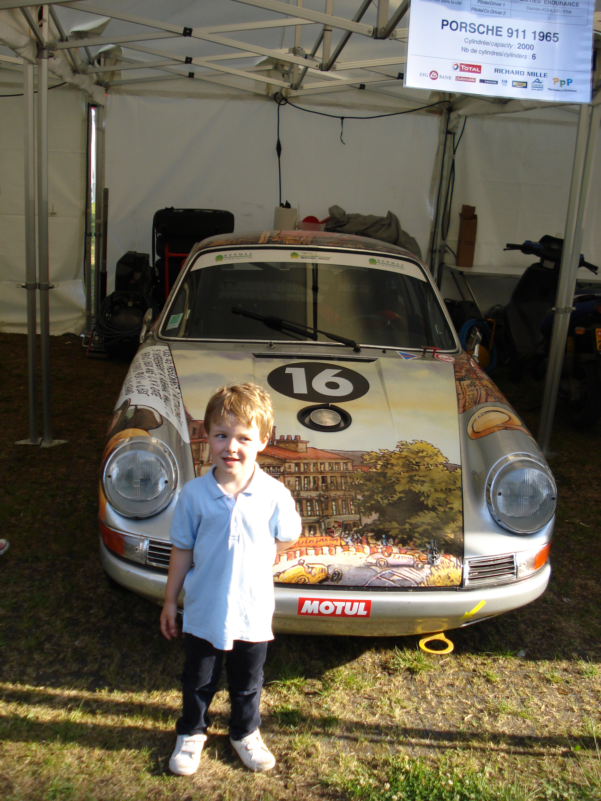
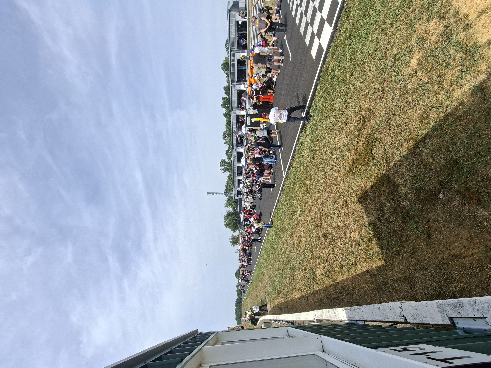

À propos d'Antoine

L'origine d'une passion
Tout a commencé ici, à Pau, à l'âge de 4 ans, lors de mon tout premier Grand Prix de Pau. C'est au cœur de cette effervescence et au plus près des moteurs que cette vocation pour le sport automobile est née.
Un rendez-vous incontournable : j'y suis allé tous les ans, sans exception, jusqu'en 2019. Cette année-là, je suis passé de l'autre côté de la barrière pour devenir bénévole dans l'organisation. Une transition naturelle qui a transformé un attachement d'enfance en un engagement de terrain concret.
À partir de 2020, mon attrait pour la compétition s'est naturellement élargi aux différents tracés de la région paloise, m'amenant à me rendre très régulièrement sur les circuits d'Arnos et de Nogaro pour y vivre l'intensité des week-ends de course en tant que spectateur.
L'année 2022 a marqué une nouvelle étape décisive dans mon parcours, avec ma première participation au Grand Prix de Pau sous l'égide de la FIA, une expérience particulièrement formatrice vécue au rythme exigeant des championnats internationaux WTCR et ETCR.
Vivre la passion autrement
Passionné de sport automobile depuis toujours, j'officie en tant que Commissaire de Piste sur les circuits de France. Mon rôle est d'assurer la sécurité des pilotes, du public et le bon déroulement des épreuves sur quatre roues.
De l'adrénaline des départs en peloton à la gestion des incidents de course, chaque meeting exige rigueur, réactivité et sang-froid. J'ai eu l'opportunité d'intervenir sur des tracés mythiques et des compétitions variées : Grand Prix Camions, Tour Auto, Coupe de France des Circuits, etc.


L'appel du deux-roues
Si l'automobile a bercé mes premières années, c'est grâce aux réseaux sociaux que j'ai pu découvrir de plus près le monde fascinant des courses de motos. Passer du volant au guidon, c'est s'ouvrir à une toute autre approche de la compétition.
Sur deux roues, la dynamique des trajectoires, la gestion des drapeaux et les types d'interventions en cas de chute diffèrent radicalement. Ce nouveau défi me permet d'élargir mon champ d'action sur la piste et de vivre l'adrénaline des sports mécaniques sous un angle inédit.